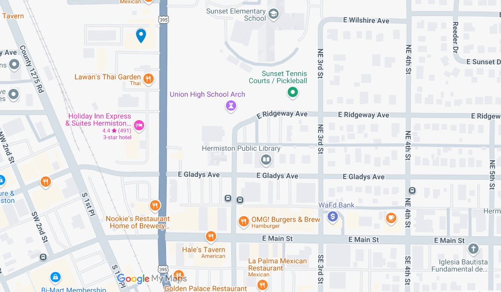

Welcome to Cheferino's Kitchen!
Story
Cheferino's story originally started with cooking meals and posting on his Instagram for friends, now his cooking has grown to serve a larger populace, which he considers friends.
LOCAL TIME
OPEN/CLOSE
Hours & Delivery
Monday - Friday: 10 AM - 8 PM
Saturday - Sunday: 10 PM - 10 PM

70°F
🌞 Patio is open!
405 N 1st St unit 105, Hermiston, OR 97838
